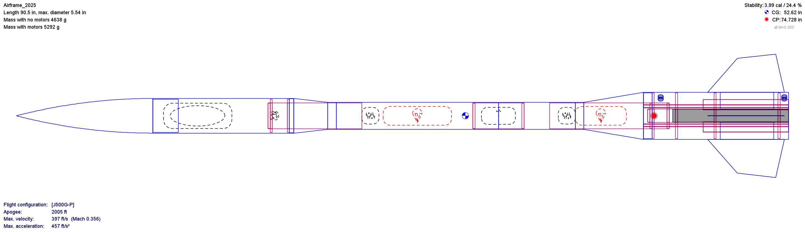

Goose
Go to the NCSSM Rocketry Website to find out more about the HPR club and see their current activity.

About Goose
Goose is NCSSM HPR's 2025 Level 2 Cluster-Motor Rocket.
This is NCSSM's first cluster-motor rocket, built to fly a mile on one J500-G, two H180-W, and two H128-W motors.
It has flown twice: a proof of concept with only one air-start, and later, with the full motor array. The first flight was successful, the air-start motors igniting and all parachutes deploying. The second seemed to go perfectly, with two successful air-starts and all parachutes deploying. However, one of the main-chute ejection charges did not go off, the rocket relying on the backup charge. Furthermore, one of the motors failed to ignite in the final air-start stage.
NCSSM HPR built this rocket while I was one of the co-captains. My primary role was organizing and facilitating the airframe's construction.
Launches
Culpepper, VA
J500-G, 2xG80-T
This was Goose's maiden launch.
It flew well, all air-starts ignited, and it landed undamaged, despite winds so heavy they blew over our canopy.
The minimal motor array was due to a low cloud cover.
Bayboro, NC
J500-G, 2xH180-W, 2xH128-W
This was Goose's first launch with a full motor array.
It flew well, all air-start stages ignited, and it landed undamaged.
However, a main-chute ejection charge and one H128-W failed to ignite.
Construction
Goose is a variable diameter Blue Tube (vulcanized cardboard) rocket, 90.5in in length. The aft section is 5.5in in diameter to hold the four 29mm motor mounts and single 38mm mount. The central section is 3in in diameter and holds the recovery system, composed of a 48in main chute, a 12in drogue, and two blue raven altimeters. The foremost section is 4in in diameter and tapers into the fiberglass nosecone. This held the payloads, which were planned for this rocket but failed during both launches. I was not heavily involved in payload creation for this rocket, as it was predominantly member-driven.
Goose's transitions are 3D-printed and not structural, with a series of spaced centering rings handling the forces. All structural components were made of fiberglass, Blue Tube, or 1/4-inch birch plywood.
Goose's fins are carbon-fiber composite. They're shaped by a laser-cut sheet of end-grain balsa wood, which allows for better epoxy permeation. Two 3D-printed wedges are super-glued onto the fins, and held in place with a 3D-printed alignment tool while drying. One layer of carbon fiber, and two layers of fiberglass are laminated onto the fins via a food-preserving vacuum sealer. A layer of release plastic separates this composite from cotton wadding that absorbs excess epoxy. Once laminated, excess carbon fiber was cut and sanded away, leaving the completed fins.
The most notable component of Goose's construction is the motor cluster. Two centering rings hold together a central 38mm motor mount tube, and 4 29mmm motor mount tubes. Other structural rings also sit on the motor mounts to connect them to the 5.5in body tube. 4 igniters run through conduits in these centering rings. The central motor ignites first to get the rocket to speed before risking an uneven motor ignition. Upon burnout, the first pair of air-start motors, spaced opposite to one another is ignited via an e-match connected to the altimeter. Upon second burnout, the remaining pair of air-start motors is ignited via another e-match connected to the altimeter. Both e-matches use magnetic quick-release cables to avoid tearing during drogue deployment.
Payloads
Goose's payloads were member-driven, and unfortunately all failed on both launch days. The first launch, this was due to them not being completed in time. The second launch, this was due to a battery failure.